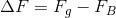

Drones 101
What is a Drone?
An unmanned aerial vehicle, commonly known as a drone, is an aircraft without a human pilot aboard. Today the term drone has broadened to include anything from the expensive 100 million USD war machines :-( to few hundreds dollar octocopters which Amazon uses to deliver packages :-)
How do they work?
They are many types of drones, so let’s talk about drones that have propellers. A drone with four propellers is called quadcopter, the one with eight propellers is called octocopter, and so on. The propellers on a drone is controlled by a microcontroller, a microcontroller processes the signals received from its data buses, and make responses based on the procedures programmed into the memory of a microcontroller. In order words, a microcontroller is a digital computer that tells each propeller on a drone exactly what to do. However, having a digital computer is not enough, since we’ll have to deal with lots of physics in order to fly a drone in real life. Basically, a drone will not even take off without the power of physics.
Physics of a Drone:
Basics
First we can simplify the problem into a simple diagram known as free-body diagram before getting into problems like "how does a drone fly?" Let’s take Amazon’s drone as an example, the machine will weigh 5.5 kg with a battery wright of around 2.2 kg, so the total mass of the drone is 7.7kg:

Imagine the box shown above is the simplest form of the drone. We know
that it has a mass of 7.7kg and a weight force pulling it down due to
earth’s gravitational acceleration about 77 newtons. Weight force can be
calculate using Newton’s Second Law, that is, F = ma.
Where m is the mass and a is the acceleration:

Now, we know that in order to overcome gravity, it is necessary to generate a force that is greater than 77 newtons. This can be accomplished easily by using propellers. The basic idea is that a drone flies by pushing air down. When the propellers of a drone pushes air dow, the drone hovers. This is because of Newton’s Third Law, which is often stated as “for every action there’s an equal and opposite reaction”:
/* the blue part is the air pushing down by the propeller disks */
Buoyancy
The weight force we got here is 77 newtons; however, the apparent weight might be slightly smaller due to the buoyancy of the air. We can calculate the apparent weight by subtracting the buoyant force from the weight force:
The equation for force of buoyancy is:

Where the density of the air is:
Now, we can work out the apparent weight, but since I couldn’t find the volume of Amazon’s drone, let’s assume it’s 0.0015 m^3 (1.5 liters). Finally we will get around 76.9 newtons of apparent weight:

Thrust Produces by Propellers
A drone hovers because of the thrust produces by the propellers. A spinning propeller sets up a pressure lower than free stream on the top of a propeller and higher than free stream behind the propeller. Downstream of the disk the pressure eventually returns to free stream condition. The thrust produces by a propeller can be model by this equation:
Where A is the area of the propeller disks and
∆P is the change in pressure.
almost done.... please visit this again tmr :)